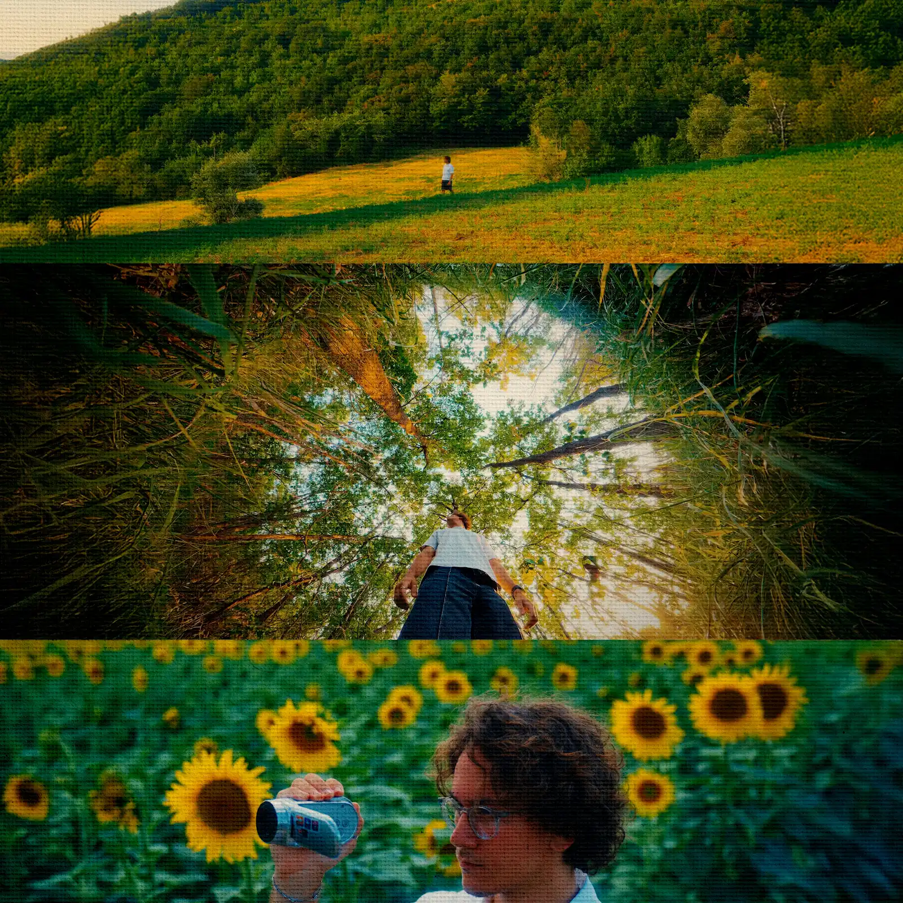
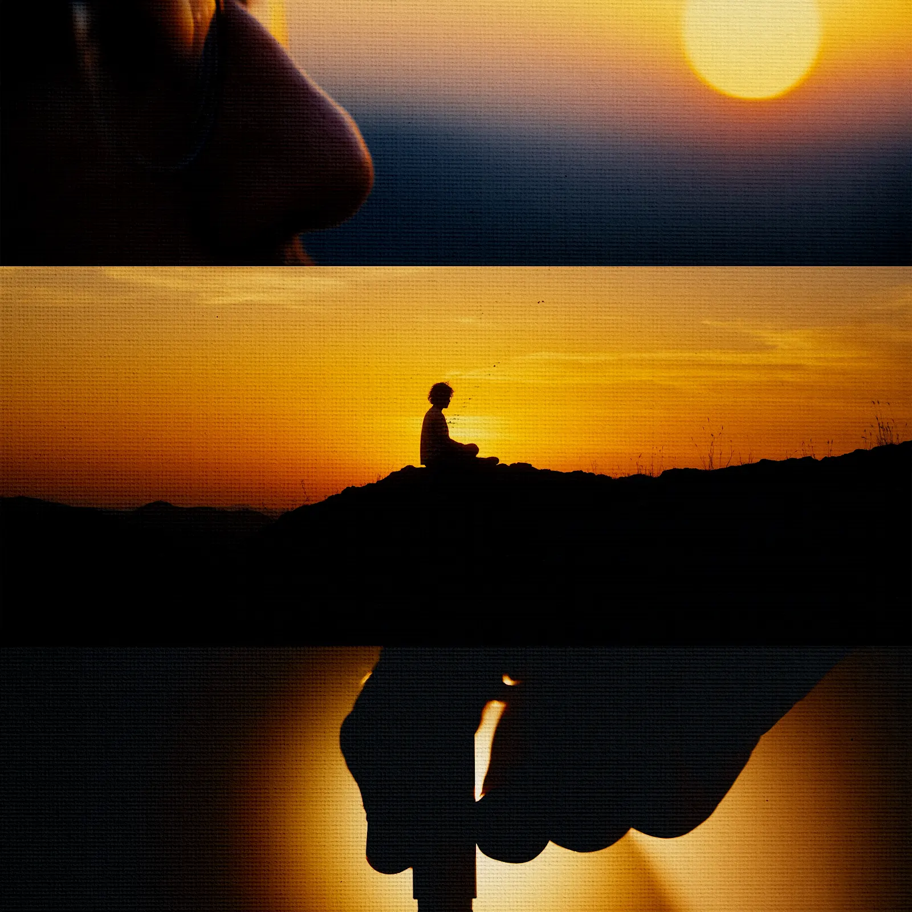
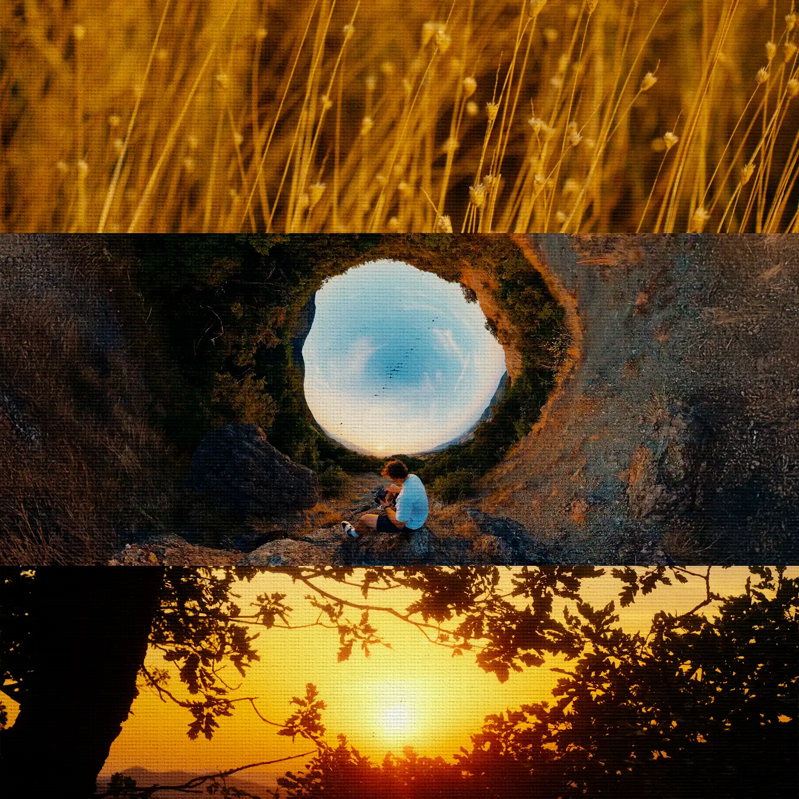

The Subtle Art of Slowing Down is a short film I made in August 2025 — a six-minute visual essay about creativity, burnout, and the cost of constant speed. It explores what happens when you decide to stop chasing the next thing and simply be present.
The idea came after a year spent rushing through everything — deadlines, meals, even the things I was supposed to enjoy. It crystallized around a question from my therapist: “You eat fast, don't you, Mattia?”
It wasn't just about food. It was about a way of living that left no room to notice, absorb, or feel anything fully.

I started creating at ten years old — uploading my first YouTube video, then learning Photoshop, picking up a camera, building websites, and experimenting with motion design and digital illustration on Procreate. By eighteen, I was working as a freelance filmmaker, photographer, and designer in Italy. Everything I once did for fun had become my job, and with it came an inability to stop. Every finished project led straight to the next one. Achievements started to feel like obligations.


The visual direction drew from fragments I had been collecting on mymind — color palettes, images, quotes, and references saved over months without a clear purpose. When the project took shape, a single mood board assembled from those disconnected pieces became its creative foundation.
Journaling in Field Notes notebooks — one page a day, by hand — also fed the process, turning scattered thoughts into something tangible.
This is the project I consider my most personal, and the one that resonated most with my audience. A film about giving yourself permission to pause — not to stop completely, but to remember that what we keep in the end are moments, not metrics.